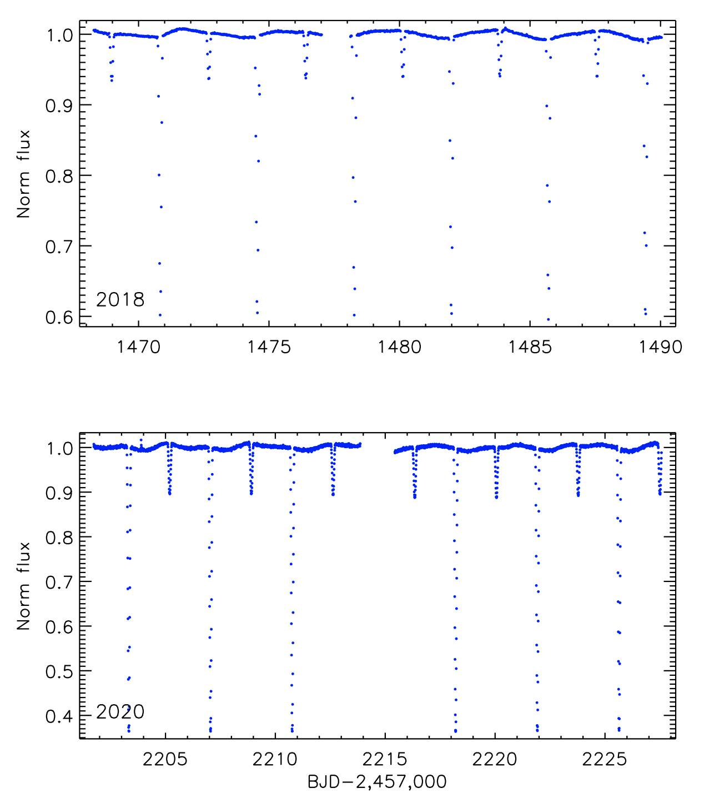
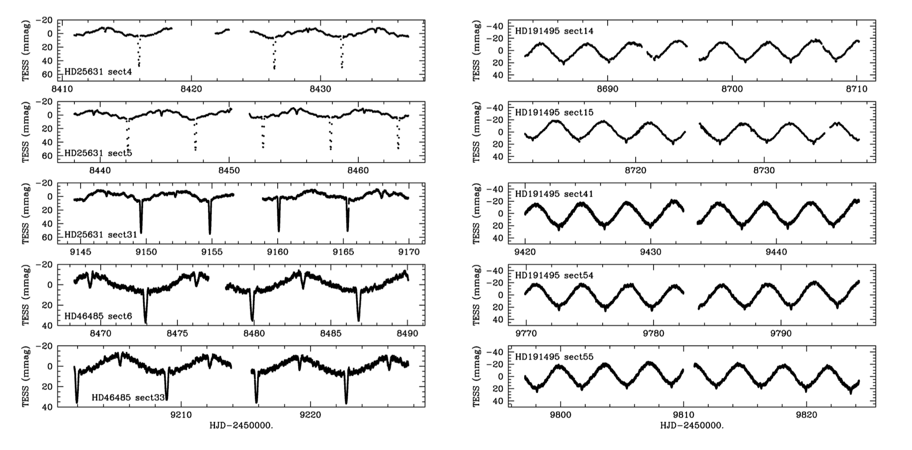
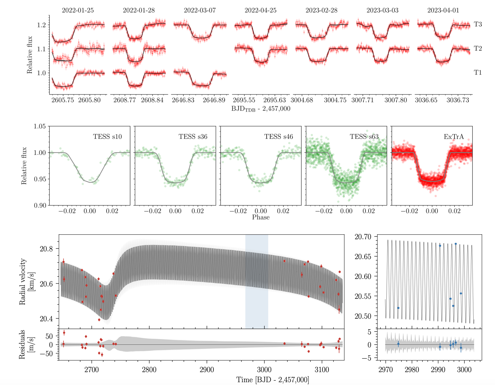

Welcome TESS followers to our latest news bulletin! This week, we are looking at three recent papers from the archive. Enjoy!
TIC 43152097. The first eclipsing binary in NGC 2232 (Frasca et al. 2023) :
Eclipsing binary stars have long been used as fundamental calibrators for precise stellar masses, sizes, and effective temperatures. Young systems containing active late-type stars are particularly important as they can help address a long-standing disagreement between measured and theoretically-predicted stellar radii. Frasca et al. (2023) present the discovery and detailed characterization of the young, totally eclipsing binary system TIC 43152097 – a member of the young open cluster NGC 2232 with an estimated age of 28-38 Myr and Solar metallicity. The authors combine TESS photometry from Sectors 6 and 33 with follow-up photometric and spectroscopic observations from OACT and HARPS-N to derive precise parameters for the system. Frasca et al. (2023) note that the TESS lightcurve outside the observed eclipses exhibits modulations with an amplitude of 15-20 mmag and period consistent with the orbital period of the binary system, suggesting the presence of cool spots on one or both stars that are rotating synchronously (or pseudo-synchronously) with the binary. The author’s analysis demonstrates that TIC 43152097 consists of a late F-type primary and a late K-type secondary orbiting each other every 3.7 days with negligible eccentricity. The measured orbital and stellar parameters of the two components are as follows: Mprimary = 1.16 MSun, Rprimary = 1.12 RSun, Teffprimary = 6070 K; Msecondary = 0.76 MSun, Rsecondary = 0.89 RSun, Teffsecondary = 4130 K. Frasca et al. (2023) note that the primary has already reached the main sequence, and that the radius of the secondary star is ~7-11% larger than expected from standard stellar evolution models. Utilizing the SPOT isochrones that take into account the effect of the inferred starspots and of magnetically-induced inhibition of the convective energy transport, the authors were able to mitigate the radius discrepancy and reproduce the parameters of the secondary for an age of 28 Myr. Thanks to TESS, Frasca et al. (2023) discovered and precisely characterized a benchmark young, totally eclipsing binary system in NGC 2232 with percent-level measurement uncertainties for the stellar masses and sizes.
Extreme mass ratios and fast rotation in three massive binaries (Naze et al. 2023) :
Most massive stars (spectral type OB) exhibit rapid rotation, typically ~200 km/sec, with some Be stars in particular reaching up to 88% of the critical rotational velocity. As rapid stellar rotation directly impacts stellar evolution, in-depth studies of fast early-type rotators can provide important new insight into their origin and characteristics. Naze et al. (2023) present a detailed analysis of three such systems, HD 25631 (spectral type B3V), HD 191495 (spectral type B0V), and HD 46485 (spectral type O7V). The targets were observed by TESS in multiple sectors at both long- and short-cadence, reside in regions of the sky with relatively low contamination, and have lightcurves that exhibit characteristic out-of-eclipse sinusoidal modulations with an amplitude of 10-30 mmag, indicative of a reflection effect. The authors complemented the TESS photometry with spectroscopic observations from multiple instruments at VLT, CFTH, TIGRE, and FUSE. Combining all available data, Naze et al. (2023) discover that all three targets are in fact binary systems with orbital periods of 3-7 days. The primary components have (M = 7-8 MSun, R = 4-4.4 RSun, Teff = 19930 K), (M = 15 MSun, R = 6.5-7.1 RSun, Teff = 28250 K), and (M = 24 MSun, R = 10-12 RSun, Teff = 36100 K), for HD 25631, HD 191495, and HD 46485, respectively. The authors note that the secondary stars are much smaller and cooler, with well-constrained masses between 0.8 and 1.8 MSun and radii between ~1.5 and 4 RSun, and somewhat uncertain effective temperatures in the range of 3400 K to 15000 K. Naze et al. (2023) also argue that the companions are unlikely to be hot subdwarfs as none of them produce detectable UV emission. Instead, the authors suggest that all three systems are young (~20 Myr), pre-interacting OB primaries with pre-Main-Sequence secondaries. Capitalizing on data from TESS, Naze et al. (2023) suggested that the fast rotation observed from HD 25631, HD 191495, and HD 46485 is likely primordial and not the result of previous binary interactions.
TOI-4860 b, a short-period giant planet transiting an M3.5 dwarf (Almenara et al. 2023) :
Large planets in short orbits around small stars provide an important ingredient to our understanding of planet formation and evolution. Recent studies have indicated that these might have a lower occurrence rate compared to Hot Jupiters orbiting Solar-type stars. Almenara et al. (2023) present the discovery and detailed characterization of the newest member of this population, TOI-4860 b. The authors combine TESS data with ground-based photometric and spectroscopic observations from ExTrA, SPIRou, ESPRESSO, and Gaia measurements to confirm that the transits are on-target, constrain the properties of the host star, and measure the planet’s mass. The analysis of Almenara et al. (2023) show that TOI-4860 is an M3.5 dwarf at a distance of 80 pc with a mass of 0.34 MSun, radius of 0.35 RSun, effective temperature of 3255 K, metallicity of [Fe/H] = 0.27 and relatively high proper motion. TESS observed the target in Sectors 10, 36, 46, and 63, and enabled the detection of ~6%-deep transits with a periodicity of 1.52 days. TOI-4860 b has a measured mass of 0.27 MJup and radius of 0.7 RJup and, at a separation of only 1.8 times the Roche limit, it is close enough to the host star to experience strong tidal interactions. The authors estimate a period change of about 10-9 per year and note that this is outside the detection capabilities of current instruments. Almenara et al. (2023) calculate a transmission spectroscopy metric of 180 for TOI-4860 b, making it a high-value target, and note that the radial velocity measurements show potential hints for an additional planet in the system with a period of about 430 days and high eccentricity of ~0.67. The authors argue that the presence of an outer planet could explain the current orbit of TOI-4860 b through Kozai resonance. Data from TESS enabled the discovery of a new giant planet orbiting a small star in a relatively sparse parameter space.

Fig. 1: Taken from Frasca et al. (2023). TESS photometry for the young, totally eclipsing binary TIC 43152097. The upper panel represents data from Sector 6 while the lower panel shows data from Sector 33.

Fig. 2: Taken from Naze et al. (2023). TESS lightcurves of massive fast rotators HD 25631, HD 191495, and HD 46485.

Fig. 3: Taken from Almenara et al. (2023). Upper and middle panels: Transit photometry of TOI-4860 b from TESS and ExTrA, along with the best-fit models. Lower panels: Corresponding radial velocity measurements from SPIRou (left) and ESPRESSO (right).